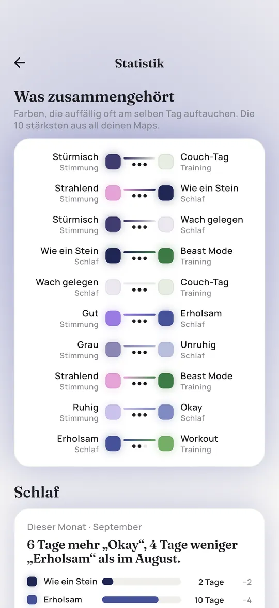

Stimmungstagebuch führen: einfach, kurz und ehrlich
Ein Stimmungstagebuch hält fest, wie es dir jeden Tag ging. Ein paar Wochen lang geführt, zeigt es Muster, die man von innen kaum bemerkt. Hier ist ein Format, das weniger als eine Minute am Tag braucht, und wie du es danach auswertest.
Was ein Stimmungstagebuch ist
Ein Stimmungstagebuch, manchmal auch Stimmungskalender oder Mood Tracker genannt, ist eine tägliche Notiz, wie du dich gefühlt hast. Meist als Zahl oder Farbe, manchmal mit ein paar Worten zum Tag. Es ist kein Tagebuch, in das du Seiten schreibst. Es geht um Regelmäßigkeit, nicht um Tiefe: dieselbe kleine Frage, jeden Tag beantwortet.
In Psychotherapie und Psychiatrie werden Stimmungstagebücher häufig eingesetzt, zum Beispiel bei Depressionen oder bipolaren Störungen, um Veränderungen früh zu bemerken. Du brauchst aber keine Diagnose, damit es dir etwas bringt. Viele wollen einfach ihre eigenen Hochs und Tiefs besser verstehen.
Wofür es gut ist
- Das Gedächtnis täuscht. Auf die Frage, wie der letzte Monat war, erinnern wir uns vor allem an die letzten Tage und ein, zwei große Momente. Das Tagebuch erinnert sich an den Rest.
- Muster werden sichtbar. Schlechte Tage nach kurzen Nächten, bessere Wochen mit mehr Zeit draußen, ein Tief, das jeden Monat wiederkommt. So etwas sieht man nur mit Daten.
- Gefühle zu benennen kann helfen. Forschung zum sogenannten Affect Labeling deutet darauf hin, dass es die Intensität eines Gefühls etwas senken kann, es in Worte zu fassen (Lieberman und Kollegen, 2007). Eine tägliche Abfrage ist eine Miniversion davon.
- Gespräche werden leichter. Acht Wochen Stimmungsdaten sind bei der Ärztin oder beim Therapeuten genauer als der Satz: Es ging mir in letzter Zeit nicht so gut.
Die Apotheken Umschau fasst den aktuellen Stand gut zusammen: Stimmungstracker können helfen, Muster zu erkennen, ob sie das Wohlbefinden selbst verbessern, ist aber noch nicht klar belegt. Ein Stimmungstagebuch ist ein Werkzeug zum Hinschauen, kein Heilmittel.
Was du notierst
Fang klein an. Erweitern kannst du später immer noch, und jedes zusätzliche Feld ist ein Grund, einen Tag auszulassen. Dieses Format passt für die meisten:
| Feld | Wie | Warum |
|---|---|---|
| Stimmung | Skala von 1 bis 5 oder fünf Farben | Der Kern des Tagebuchs |
| Schlaf | Stunden oder eine Bewertung | Häufigster versteckter Einfluss auf die Stimmung |
| Energie | Wenig, mittel, viel | Trennt müde von traurig |
| Eine Zeile | Was heute auffiel | Kontext für später |
| Optional | Anspannung, Zyklus, Alkohol, Sport, Medikamente genommen | Nur wenn du ihren Einfluss sehen willst |
Wenn du Medikamente nimmst oder in Behandlung bist, frag deine Ärztin oder deinen Therapeuten, welche Felder für dich wichtig sind. Oft sollen bestimmte Dinge festgehalten werden, etwa Schlafstunden oder Gereiztheit.
Lieber auf Papier? Unsere kostenlose Mood Tracker Vorlage ist im Grunde ein Stimmungstagebuch in Farben, für ein ganzes Jahr auf einer A4-Seite.
Wann und wie oft
Einmal am Tag, immer zur selben Zeit. Zwei Zeitpunkte funktionieren gut:
- Abends über heute. Frische Erinnerung, aber du bist müde, und die letzte Stunde färbt den ganzen Tag.
- Morgens über gestern. Eine Nacht Abstand macht die Bewertung ruhiger, und der Tag ist komplett. Vielen fällt das leichter, und genau so fragt Pixi.
Entscheide dich für einen und bleib dabei, sonst sind die Tage schlechter vergleichbar. Verpasste Tage innerhalb von ein bis zwei Tagen nachtragen, ältere Lücken frei lassen.


Auswerten nach ein paar Wochen
Nach etwa vier Wochen gibt es genug zu sehen. Setz dich einmal im Monat mit diesen Fragen hin:
- Wie viele gute, mittlere und schlechte Tage gab es? Zähl nach. Oft war es besser oder schlechter, als es sich angefühlt hat.
- Gibt es Phasen? Mehrere schlechte Tage hintereinander verdienen mehr Aufmerksamkeit als einzelne.
- Unterscheiden sich Wochentage? Sonntagabend und Montagmorgen sind klassische Tiefs.
- Was taucht zusammen auf? Vergleiche Stimmung mit Schlaf, Energie, Sport oder deinem Zyklus.
Vorsicht mit Schlüssen. Wenn schlechte Stimmung und kurze Nächte zusammen auftauchen, können die kurzen Nächte die Stimmung drücken, die Stimmung kann dich wach halten, oder beides kommt von einer stressigen Woche. Ein Tagebuch zeigt, was zusammengehört. Es beweist nicht, warum.
Mit Fachleuten besprechen
Wenn du in hausärztlicher, psychiatrischer oder psychotherapeutischer Behandlung bist, nimm dein Tagebuch mit. Ein Raster aus Farben oder eine einfache Kurve lässt sich auch in einem kurzen Termin schnell überblicken. Sprich Auffälligkeiten an: Wochen mit sehr wenig Schlaf, plötzliche Wechsel, Tage, an denen du nicht aus dem Bett kamst. Pixi speichert alles nur auf deinem Handy. Du kannst deine Daten exportieren oder ein Bild einer Map teilen, wenn du sie zeigen willst.
Wenn ein Tagebuch nicht reicht
Ein Stimmungstagebuch ist keine Behandlung und keine Diagnose. Wenn deine Stimmung seit mehr als zwei Wochen gedrückt ist, dich im Alltag einschränkt oder stark schwankt, sprich bitte mit deiner Hausärztin, deinem Hausarzt oder einer Psychotherapeutin. Informationen und einen Selbsttest bietet die Stiftung Deutsche Depressionshilfe, das Info-Telefon Depression erreichst du kostenfrei unter 0800 33 44 533.
Wenn du daran denkst, dir etwas anzutun, wende dich sofort an den Notruf 112 oder an die TelefonSeelsorge, kostenfrei und rund um die Uhr unter 0800 111 0 111 oder 0800 111 0 222.
Fragen und Antworten
Was schreibe ich in ein Stimmungstagebuch?
Mindestens deine Stimmung auf einer einfachen Skala. Schlaf, Energie und eine Zeile zum Tag machen es deutlich nützlicher. Anderes nur, wenn du seinen Einfluss sehen willst.
Wie lange sollte ich ein Stimmungstagebuch führen?
Mindestens vier Wochen, bevor du nach Mustern suchst. Viele führen ein einfaches Stimmungstagebuch das ganze Jahr, weil der lange Blick Jahreszeiten und Zyklen zeigt.
Gibt es eine Stimmungstagebuch Vorlage?
Ja, unsere Mood Tracker Vorlage gibt es kostenlos als PDF zum Ausdrucken. Sie zeigt ein ganzes Jahr auf einer A4-Seite.
Hilft ein Stimmungstagebuch bei Depressionen?
Es kann dir und deinen Behandelnden helfen, Veränderungen und Muster zu erkennen. Diagnose und Behandlung ersetzt es nicht. Wenn du eine Depression hast oder vermutest, wende dich bitte an Fachleute.

Geschrieben von Caspar Baumeister. Ich bin Indie-Entwickler in Berlin und baue Pixi allein. Ich lese jede Nachricht. Wenn hier etwas unklar ist oder du eine Idee für die App hast, schreib mir: @casparbuilds auf X oder per E-Mail.